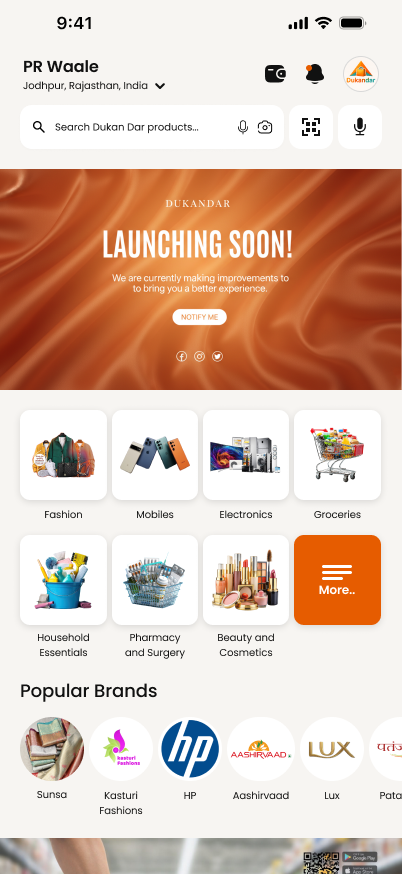
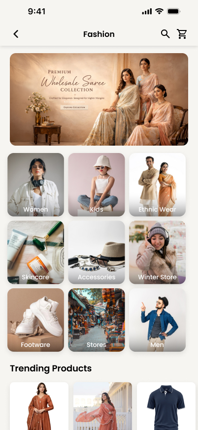
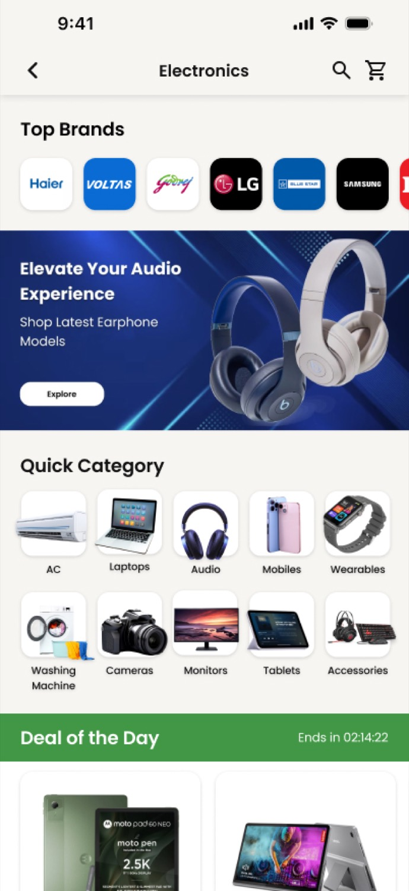

Dukandar.
A local-commerce experience designed to make discovering products and shopping from nearby stores easier.



The brief
Help people find products and shop from stores nearby. The project files show category layouts, product cards, search and product detail screens for a local shopping experience.
Approach
Start with discovery: surface categories and familiar product groupings, then keep search and product detail close at hand. Use the warm orange in the supplied interface as a clear accent for shopping actions and wayfinding.






Design decisions
Category-first discovery gives shoppers quick entry points, while product cards make browsing feel scannable. The orange accent supports a friendly retail tone and helps important shopping actions stand out.
Project note
The supplied files document interface layouts and product screens. Launch status and measured business results were not included in the materials.